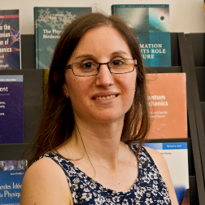

Cecilia Scannapieco
Investigadora Independiente
- Correo
- cscannapieco [at] df.uba.ar
- Oficina
- Oficina 2177, 2do piso, Dpto. de Física, Pabellón 1
Líneas de investigación
- Simulaciones cosmológicas de la evolución de galaxias
- Formación de discos galácticos
- Evolución química de galaxias
Publicaciones
Dolag, Klaus; Karademir, Geray S.; Tornatore, Luca; …; Badía, Javier; Scannapieco, Cecilia et al.. The OpenGadget3 Code for Cosmological Simulations. Preprint (2026).
InspireHEPPreprint
L. Biaus; S. E. Nuza; C. Scannapieco et al.. Probing the kinematics of the Local Group with chemically enriched gas in the HESTIA simulations. Astronomy & Astrophysics (2026).
ORCIDPublicado
E. Lozano; C. Scannapieco; S. E. Nuza; Y. Ascasibar; V. Springel. From atoms to stars: Modelling H2 formation and its impact on galactic evolution. Astronomy & Astrophysics (2025).
ORCIDPublicado
F. G. Iza; C. Scannapieco; S. E. Nuza et al.. The distribution and origin of metals in simulated Milky Way-like galaxies. Astronomy & Astrophysics (2025).
ORCIDPublicado
Paula D López; Francesca Fragkoudi; Sofía A Cora; …; Cecilia Scannapieco et al.. Formation and evolution of boxy/peanut bulges in the Auriga cosmological simulations. Monthly Notices of the Royal Astronomical Society (2025).
ORCIDPublicado
Federico G. Iza; Sebastián E. Nuza; Cecilia Scannapieco et al.. Cosmological gas accretion history onto the stellar discs of Milky Way-like galaxies in the Auriga simulations -- (II) The inside-out growth of discs. Preprint (2024).
arXivPreprint
Paula D López; Cecilia Scannapieco; Sofía A Cora; Ignacio D Gargiulo. Unveiling the origins of galactic bars: insights from barred and unbarred galaxies. Monthly Notices of the Royal Astronomical Society (2024).
ORCIDPublicado
Federico G Iza; Sebastián E Nuza; Cecilia Scannapieco et al.. Cosmological gas accretion history on to the stellar discs of Milky Way-like galaxies in the Auriga simulations – II. The inside–out growth of discs. Monthly Notices of the Royal Astronomical Society (2024).
ORCIDPublicado
Biaus, Luis; Nuza, Sebastián E.; Richter, Philipp; …; Scannapieco, Cecilia et al.. Kinematics of the Local Group gas and galaxies in the hestia simulations. Mon.Not.Roy.Astron.Soc. 517 (2022) (2022).
InspireHEPPublicado
Federico G Iza; Cecilia Scannapieco; Sebastián E Nuza et al.. Cosmological gas accretion history onto the stellar discs of Milky Way-like galaxies in the Auriga simulations – (I) Temporal dependency. Monthly Notices of the Royal Astronomical Society (2022).
ORCIDPublicado
Cecilia Scannapieco; Gabriele Cescutti; Cristina Chiappini. The neutron-capture and α-elements abundance ratios scatter in old stellar populations: cosmological simulations of the stellar halo. Monthly Notices of the Royal Astronomical Society (2022).
ORCIDPublicado
Cecilia Scannapieco; Gabriele Cescutti; Cristina Chiappini. The neutron-capture and alpha-elements abundance ratios scatter in old stellar populations. Cosmological simulations of the stellar halo. Preprint (2021).
arXivPreprint
Pablo Corcho-Caballero; Yago Ascasibar; Cecilia Scannapieco. Do galaxies die? Different views from simulations and observations in the local Universe. Monthly Notices of the Royal Astronomical Society (2021).
ORCIDPublicado
Pierre-Antoine Poulhazan; Cecilia Scannapieco; Peter Creasey. Precision Pollution - The effects of enrichment yields and timing on galactic chemical evolution. Preprint (2018).
arXivPreprint
Guidi, Giovanni; Scannapieco, Cecilia; Walcher, Jakob; Gallazzi, Anna. Physical properties of galaxies: towards a consistent comparison between hydrodynamical simulations and SDSS. Mon.Not.Roy.Astron.Soc. 462 (2016) (2016).
InspireHEPPublicado